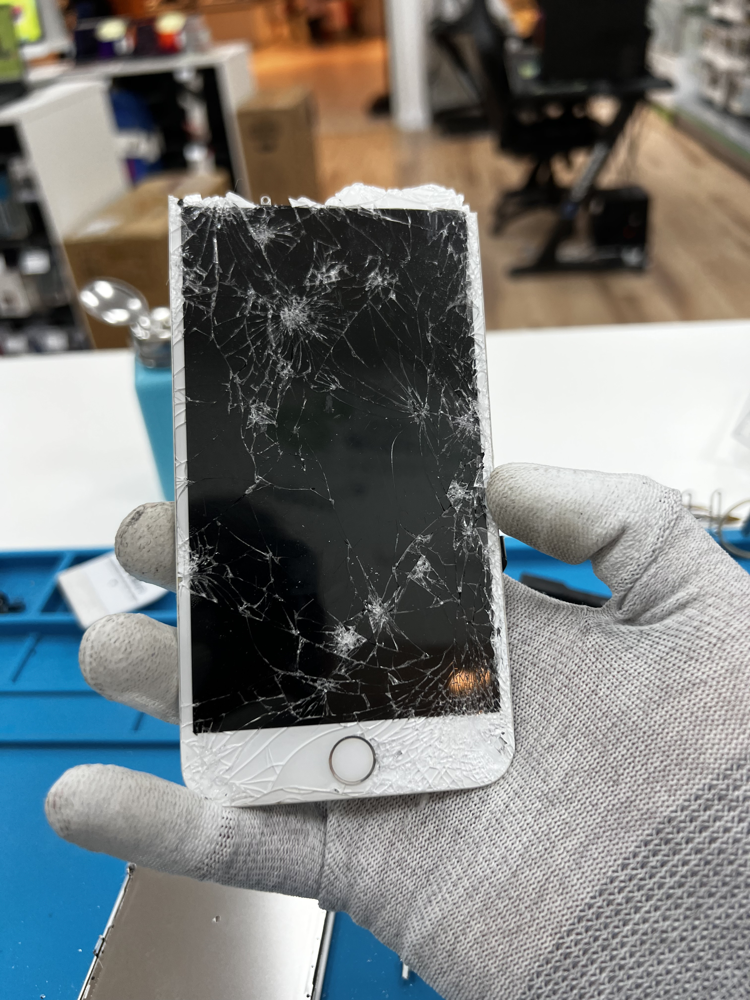

Repairing as an option
its almost like magic
There is lots to consider when picking between the three choices
- Cost
- Time
- Effort
- Environmental Impact
Repairing is usually the cheapest option, but not always the fastest
Buying new is usually the fastest option, but not the cheapest (especially when it comes to flagship models) ( meaning the best one they make that current year)
Buying second hand is usually the most environmentally friendly option, make sure you purchase it from a company that gives you a long warranty
Overall, repairing is usually the best option, but it always depends on your budget, the item you have and where you get it fixed